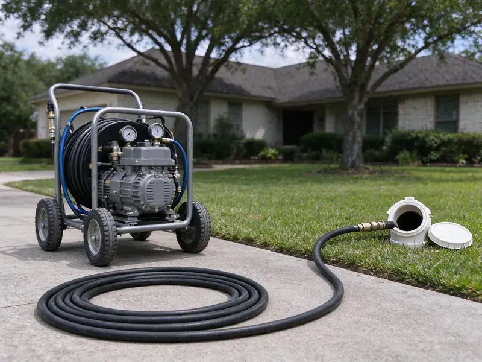

Hydro Jetting in Eagle Mountain, UT
Hydro jetting in Eagle Mountain, UT uses pressurized water to scour pipes back to full size, removing grease, scale and roots a cable misses.
- Camera Inspection Before Jetting
- High-Pressure Technology
- Pipe-Safe Pressure Settings
- High-Pressure Cleaning

Blast Out Grease and Roots for Good With Hydro Jetting in Eagle Mountain, UT.
Call for a quote and we will inspect the line first to set the right pressure and nozzle.
High-Pressure Hydro Jetting in Eagle Mountain, UT That Cleans the Whole Pipe
When conventional snaking is not enough, hydro jetting uses high-pressure water to scour the inside of your pipes, restoring them to near-original condition. BPK Plumbing provides this thorough drain cleaning solution for homes and businesses throughout Eagle Mountain, UT.
Our expertise includes:
- High-pressure water jetting for all pipe sizes
- Pre and post jetting video inspection with recordings
- Root removal and heavy grease buildup clearing

Additional Drain Services Services in Eagle Mountain, UT
From stubborn kitchen clogs to main sewer backups, our drain services in Eagle Mountain, UT restore full flow fast and keep it that way.


Customers
Why Choose BPK Plumbing for Hydro Jetting in Eagle Mountain, UT?
Choosing the right method for drain cleaning is crucial, especially with common issues like tree root intrusion and mineral buildup. Utah water is among the most mineral-heavy in the country in many areas, and scale builds up quickly in water heaters, faucets and appliances. Hydro jetting is often the most complete and long-lasting solution.
- Eco-Friendly, This method uses only pressurized water, avoiding harsh chemicals that can damage pipes or harm the environment.
- Prevents Recurrence, By thoroughly cleaning the pipe walls, hydro jetting greatly reduces the chances of blockages forming again quickly.
- Chemical Free, Hydro jetting uses only water, so nothing harsh goes into your plumbing or the city sewer.
Citywide Coverage
No matter where you are in Eagle Mountain, UT, you can count on BPK Plumbing for prompt and professional hydro jetting. We are committed to keeping the drains flowing smoothly for all our local customers.
Experienced Team
Our hydro jetting technicians at BPK Plumbing are well trained and experienced in operating this equipment safely and effectively. They understand the differences of the pipe materials and blockage types common in Utah.
Safety-First Approach
Our equipment is regularly inspected and maintained for safe and efficient performance. We take every precaution, including a pipe camera inspection before jetting, to prevent any damage to your plumbing system.
Trusted Certified Eagle Mountain Plumbing Services Professionals
At BPK Plumbing, we take pride in providing certified plumbing services throughout Eagle Mountain, UT. Backed by leading industry credentials, our experienced plumbers combine technical skill with genuine customer care. Whether it is repair, installation, or maintenance, we follow strict safety and quality standards to deliver lasting results you can trust.
Call Us Now PHCC Plumbing Contractor Recognition
PHCC Plumbing Contractor Recognition Better Business Bureau (BBB) Accreditation
Better Business Bureau (BBB) Accreditation Angi Certified Pro
Angi Certified Pro ISO 9001 Quality Management Certification
ISO 9001 Quality Management CertificationAdvanced Hydro Jetting Solutions in Eagle Mountain, UT
Hydro Jetting Before Pipe Lining in Eagle Mountain, UT
Cured-in-place pipe lining needs a clean surface to adhere and seal correctly. We jet the host pipe to remove roots, scale and debris, then camera it to confirm it is ready. Any heavy obstructions are cut out before the liner is installed. Skipping this step can lead to wrinkles or poor bonding. Proper prep is part of why lined pipe can last many years.

Residential Sewer Line Jetting in Eagle Mountain
Main sewer lines in homes are usually 3 or 4 inches and can collect years of grease, soap, mineral scale and roots. We feed jetting hose through a cleanout and work it toward the street, cleaning in passes. Rear-facing jets pull the nozzle forward while forward jets loosen heavy blockages. The water carries debris down to the city main. A camera run afterward shows the pipe walls clean and open.
Scale Removal in Cast Iron Pipes in Eagle Mountain
Cast iron drains in older homes build up rust tubercles and mineral scale, and hard water speeds that process. Jetting with the right nozzle can strip much of this buildup and bring back flow. We keep pressure in a safe range for aged iron and watch the camera for thin spots. This cleaning is also the standard prep step before pipe lining. Clean pipe walls help a liner bond properly.
Sewer Line Descaling with Hydro Jetting in Eagle Mountain
Over time, mineral deposits and other materials can build up on the interior walls of sewer lines, forming a tough scale. This reduces pipe diameter and can lead to frequent clogs. Utah water is among the hardest in the country in many areas, and scale builds up quickly in water heaters, faucets and appliances. Hydro jetting is the most effective method for sewer line descaling, using powerful water jets to break down and flush away these mineral deposits, restoring the pipe's full carrying capacity and slowing future buildup.
Residential Hydro Jetting in Eagle Mountain
For homeowners in Eagle Mountain facing recurring clogs, slow drains, or foul odors, residential hydro jetting is a reliable solution. Our service targets common household culprits like grease buildup from kitchens, hair and soap scum from bathrooms, and even laundry detergent residue. We use purpose-built nozzles and adjustable pressure to safely clear blockages in pipes ranging from small kitchen lines to main sewer connections, restoring full drainage and preventing future issues.
Kitchen Line Grease Jetting in Eagle Mountain, UT
Kitchen drains are the most common grease trouble spot in any home or restaurant. Grease clings to pipe walls and hardens, especially where the line runs flat under a slab. Jetting melts and scrubs this buildup away instead of just poking a hole through it. We use smaller hose and nozzles sized for 1-1/2 and 2 inch kitchen lines. This keeps your sink and dishwasher draining properly for much longer.
Sewer Line Hydro Jetting in Eagle Mountain
When your main sewer line has a blockage, it can affect all the drains in your Eagle Mountain home or business. Our sewer line hydro jetting service is equipped to clear even the most severe obstructions in these larger diameter pipes. We use high-definition cameras to inspect the line before and after jetting, confirming the blockage is completely removed and the pipe is clean. Rocky ground can make sewer line and water service repairs slower, and trenchless methods are often a good fit where digging is tough.

Emergency Hydro Jetting Services in Eagle Mountain, UT
When you have a severe, overflowing drain or a complete sewer backup in Eagle Mountain, UT, you need fast help. BPK Plumbing offers emergency hydro jetting to quickly resolve urgent plumbing problems. Our quick response team can bring jetting equipment to clear critical blockages, minimizing water damage and restoring your plumbing system as fast as possible. Do not wait, call us when every minute counts.
Expert Hydro Jetting Services Near Me in Eagle Mountain, UT
Being local means we know which neighborhoods have older cast iron or clay pipe and which have newer PVC. That helps us choose safe pressure settings and the right nozzle. It also means faster arrival times when you need help.
Searching for hydro jetting near me usually means a clog keeps coming back. Our local crew brings jetting equipment and a camera to Eagle Mountain homes and businesses, so we can diagnose and clean in one visit. You see the before and after footage.
BPK Plumbing at a Glance
- Fully licensed plumbing team covering Eagle Mountain, UT
- 24/7 emergency service with same-day scheduling
- Clear written estimates, no hidden fees
- 4.8-star rated by 470+ Utah customers
Eagle Mountain Map
Eagle Mountain Information
- Population
- 56,932
- Area codes
- Local
- Service area
- Eagle Mountain and communities within 40 miles
- Nearby
- Saratoga Springs, Lehi, Herriman, Draper
Mineral scale bonds with kitchen grease inside pipes, so hydro jetting is often the best way to restore full flow in older lines in Eagle Mountain, UT. Utah water is among the hardest in the country in many areas, and scale builds up quickly in water heaters, faucets and appliances.
Expert Services
Trust our professionals for reliable BPK Plumbing solutions in Eagle Mountain, UT.
Our Specialized Plumbing Services in Eagle Mountain, UT
At BPK Plumbing, we provide a complete range of plumbing services across Eagle Mountain, UT. From leak detection to full system installations, our team ensures fast, precise, and affordable service for both residential and commercial properties. Explore our core services below:


Here Is How Our Hydro Jetting Process Works in Eagle Mountain, UT
BPK Plumbing follows a step-by-step approach to make sure your drains are cleaned completely and safely.
Request a Quote
Call (385) 543-4073 to speak with our friendly team about your drain issues. We will gather initial information and schedule a convenient time for a professional assessment.
Pipe Inspection
Our technician will perform a detailed camera inspection of your pipes to identify the exact location and nature of the blockage. This step is crucial for safety and effectiveness.
Hydro Jetting
Using purpose-built nozzles and high-pressure water, we meticulously clean the pipe walls, breaking down and flushing out all obstructions and buildup.
Frequently Asked Questions About Hydro Jetting in Eagle Mountain
The cost of hydro jetting in Eagle Mountain, UT can range from $300 to $800, depending on the severity of the clog, the length and diameter of the pipe, and whether camera inspection is required. More complex jobs, like removing extensive tree roots or cleaning long commercial lines, may be on the higher end. We provide a written estimate after assessing your situation.
Generally, a permit is not required for standard hydro jetting aimed at clearing blockages in existing lines. However, if the hydro jetting is part of a larger repair or replacement project that alters the plumbing system, a permit from the local building department may be necessary. We will advise you if a permit is needed for your situation.
BPK Plumbing uses professional-grade hydro jetting equipment from trusted manufacturers like Spartan Tool and MyTana. These brands are known for their reliability, powerful performance, and safety features, so we can deliver the most effective cleaning for your pipes.
Repeat clogs in the same line, slow drains after snaking, sewer odors and known grease or root problems are good reasons to consider jetting.
While small, low-pressure drain jetters are available for rent, professional hydro jetting equipment is far more powerful and requires training to operate safely and effectively. Improper use can damage pipes, cause injury, or fail to clear the blockage. For severe clogs, it is always best to call experienced professionals like BPK Plumbing.
Hydro jetting is very effective against a wide range of stubborn clogs that traditional snaking cannot fully clear. This includes heavy grease buildup, mineral scale, sludge, soap scum, hair clogs, and even invasive tree roots that have penetrated your sewer lines. It is designed to scour the entire pipe surface.
It is safe for most pipes in fair condition when pressure is set correctly. We camera the line first and avoid jetting pipe that is broken or caved in.
Snaking uses a rotating cable to break through a clog. Jetting uses pressurized water to clean the entire pipe wall and flush debris away.
What People Are Saying About Our Plumbing Experts?

James P.
Our commercial plumbing system had a leak under the sink, and BPK Plumbing handled it professionally. The plumbers arrived quickly and restored everything without disruption to our customers.
Commercial Plumbing · Herriman, UT
Mark T.
When our office needed drain cleaning, BPK Plumbing provided quick, reliable service. The plumber arrived on time and made sure every drain flowed perfectly before leaving. Very satisfied.
Drain Cleaning · Orem, UT
Daniel K.
A pipe burst at 11 pm and they actually answered. The plumber showed up within the hour, shut everything down, and had us back to normal the next morning. Could not ask for more.
Emergency Plumbing · South Jordan, UT
Emily R.
I called BPK Plumbing for plumbing repair, and the technician was fast, polite, and thorough. They explained the problem clearly and fixed it the same day. I will definitely hire them again. Highly recommended!
Plumbing Repair · Orem, UT
Patricia H.
We had a slab leak that two other companies could not find. BPK Plumbing located it in under an hour, explained our options, and the price matched the quote to the dollar.
Slab Leak Repair · Saratoga Springs, UT
Sofia M.
Two new toilets installed in one visit, no mess left behind, and the tech even adjusted a faucet he noticed was dripping. Fair pricing and really friendly.
Toilet Installation · Herriman, UT